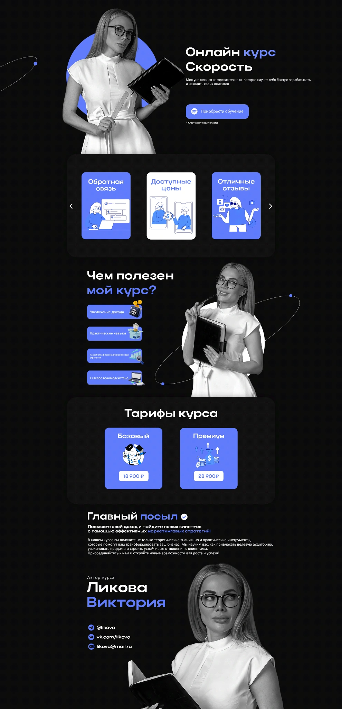

04 / Web · Landing · Marketing
Онлайн
курс «Скорость»
Landing page для онлайн-курса: оффер, визуальная система, программа, тарифы и блоки доверия собраны в один продающий сценарий.

Объяснить ценность
и вести к покупке.
Страница построена вокруг понятного продукта: сразу обозначается результат курса, затем раскрывается польза, формат, тарифы и главный оффер.
Визуально использована контрастная темная среда с ярким синим акцентом, чтобы удерживать внимание на ключевых действиях.
Собрал продающую
структуру.
Главный экран сразу отвечает, что это за продукт и зачем он нужен.
Польза курса разбита на короткие понятные смысловые блоки.
Ценовые предложения выделены отдельно и не теряются внутри длинной страницы.
Отзывы, автор и дополнительные аргументы поддерживают решение о покупке.
Полная структура landing page проекта.
Landing, который
объясняет продукт.
Вместо перегруженной страницы получилась последовательная история: проблема → польза → доказательства → тарифы → действие.